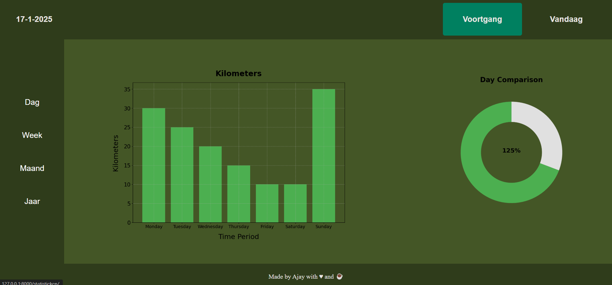

Daily Kilometer Input
This feature allows users to log the number of kilometers they have run or walked each day. The input is securely stored in an SQL database and seamlessly integrated with a Django backend, enabling accurate data tracking and future analysis within the web application.


Interactive Analytics Dashboard
The analytics page provides users with a clear visual representation of their activity data. Users can view progress over different time periods, weekly, monthly, or yearly, and compare current results with previous data. The dashboard is built using Python, HTML, CSS, and JavaScript to ensure a smooth and engaging experience.
Technologies Used
Stack: Python, HTML, CSS, JavaScript, Django and Docker.
Note: Final-phase preview. Client-specific features hidden for privacy reasons.